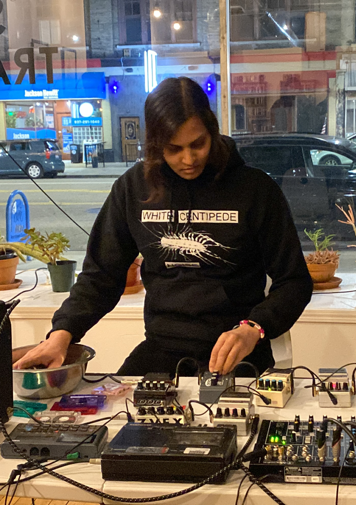
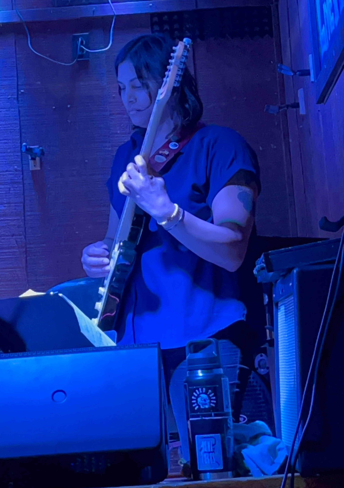

Abhilasha Chebolu is an electro-acoustic improvisor
 
Out now on
Breaching Static!
----------
New
Gault
release also dropped recently and Seth Dailey really knocked it out of the park with this piece.
Listen here
 ----------
----------